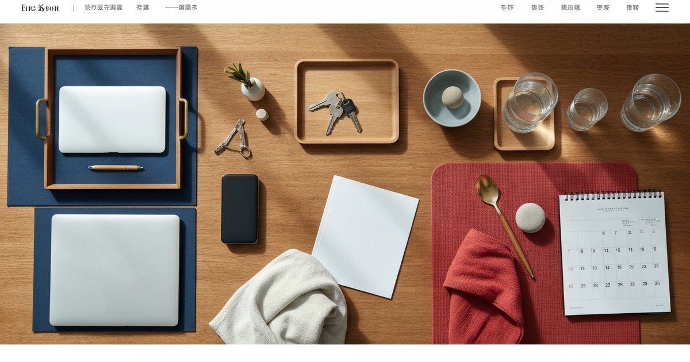

一個人住得踏實：財務、健康與居家安全的 8 項穩定化做法
整理海歸返台後一人生活的緊急預備金、醫療接軌、居家安全、心理支持與日常儀式，提供可逐項執行的檢查清單。

第一件事：把緊急預備金先算清楚，不要用直覺猜測需要多少
海歸返台的讀者最常低估的，不是生活費，而是「意外需要周轉」的金額。在國外工作時，多數人已經習慣了信用卡預扣、保險自動扣款、房租自動轉帳的生活節奏；回到台灣，突然要自己管理水電費、房屋稅、網路費、手機帳單，卻沒有建立任何追蹤系統，常在收到帳單時才發現錢已經動用了。
編輯團隊建議的第一個做法，是用「三層帳戶」框架先把錢的位置固定下來。第一層是 3 至 6 個月的生活周轉金，放在活存或數位帳戶，專門用來支付帳單與非預期支出；第二層是 1 筆緊急安置金，假設突然需要搬家或家具損壞，能在 3 天內湊出來而不影響日常開銷；第三層是長期儲蓄帳戶，用來應對健康檢查、稅務申報或旅行回家的需求。這個框架的重點不是存款數字，而是每筆錢都有它「何時可以動用」的邊界，不會在焦慮時把所有存款混在一起看，然後產生錯誤的安全感或恐慌感。
在台灣，許多海歸返台者一開始會用國外的網路銀行或加密貨幣錢包管理資產，但本地日常繳費系統並不完全支援這些管道。例如自來水費、區域電費、健保費與房屋稅，多數仍需要使用本地帳戶轉帳或到超商代收。建議返台後優先到一家本地銀行或信用合作社開戶，並申請行動網銀與電子對帳單，把所有固定帳單設定為自動扣繳，降低人不在台灣時或忙碌時的繳費壓力。
- 建立三層帳戶：生活周轉（3-6 個月）、緊急安置金（約 1 個月薪）、長期儲蓄
- 返台後優先開立本地銀行帳戶，設定固定帳單自動扣繳
- 每月檢視一次帳單，用 app 或試算表追蹤固定支出與浮動支出比例
第二件事：把醫療系統接軌列為第一個月的優先事項，不是等生病了才找醫生
在國外工作期間，多數人已經習慣了年度健檢、公司體檢或私人健康檢查的節奏。返台後如果沒有立刻銜接，很容易就這樣過了兩、三年沒做過完整檢查，直到身體發出警訊才發現問題。一個人住，沒有家人會提醒你去掛號，也沒有同事會順路幫你帶藥，所以健康的「系統維護」必須自己主動安排。
第一步是選定家裡附近的全科診所作為固定就醫點，最好是走路可達或在同一行政區內的診所。這個診所的醫師會成為你健康履歴的第一線把關者，無論是慢性處方、慢性病追蹤或臨時發燒，都有一個可以快速預約的窗口。全科之外，建議同步找一間腸胃科或家庭醫學科作年度健檢的合作院所；不同院所與檢查方案差異很大，實際項目與費用請以院所公告或諮詢結果為準，再依家族病史與自身需求選擇。
第二步是確認自己的健保卡狀態與是否有欠費。海關居留、定居或依親投保的流程不盡相同，有些人返台後需要重新加保，這段空窗期若有就醫需求就得自費，建議先向健保署臨櫃或致電確認投保資格與狀態，避免在急需就醫時才發現證件或資格有問題。第三步是把自己的用藥履歴、過敏史與家族疾病史整理成一份 PDF，存在手機裡，緊急就醫時可以立刻出示給醫護人員參考，省去口頭解釋的時間與誤差。
- 選定固定全科診所與年度健檢院所，列入每月待辦而非等到需要才找
- 確認健保卡狀態與投保資格，避免就醫空窗
- 整理一份數位健康摘要檔（用藥史、過敏史、家族病史），存在手機隨身可用
第三件事：認識長照與在宅醫療的可能，不是為了現在，而是為了累積選項
長照議題聽起來很遠，但一人生活的核心焦慮之一，其實是「萬一哪天我需要人照顧，誰來」的問題。這個問題不需要現在回答，但需要現在開始認識資源。台灣的長照 2.0 服務範圍從居家照顧、喘息服務到在宅醫療都有覆蓋，但多數人不知道的是：只要具備設籍與居住事實，年滿 65 歲或領有身心障礙手冊者就能申請相關服務，而 55 歲以上的平地原住民也可適用。
編輯團隊建議不需要現在就啟動長照申請，但可以先做一件事：了解家裡所屬的長照服務單位與聯絡方式。把長照專線 1966 的 QR code 存在手機通訊錄裡，或者把衛生局的長期照顧管理中心網頁加入書籤。這個動作的心理意義大於實質意義——當你知道「有這個資源可以聯絡」，對未知的焦慮就會降低，日常的不安全感也會跟著減少。
此外，若家族中有慢性病、心血管疾病或認知退化病史，提前諮詢在宅醫療的可行性是有價值的。在宅醫療在都會區的可近性較高，但偏遠鄉鎮仍在擴展中，提前了解自己住家方圓 20 分鐘車程內有哪些在宅醫療院所，能在真正需要時節省決策時間。不過，Elite Fashion 編輯團隊要提醒的是：這些資訊的用途是「擴充選項」，而非讓人現在就投入規劃或簽署任何服務合約；若涉及具體申請，請與合格的長照個管師或社工討論個人化的需求與財務負擔。
- 把長照專線 1966 與所在地衛生局長照中心聯絡方式存入通訊錄
- 了解家裡 20 分鐘車程內的長照服務單位與在宅醫療院所
- 若家族有慢性病或認知退化病史，可提前與長照個管師諮詢，不需現在申請但先掌握資源地圖
第四件事：居家安全的基礎建設，先從「不出事」的角度檢查一遍
一人住的居家安全有兩個層面：一個是「預防性」的，例如火災、瓦斯外洩、門窗防盜；另一個是「應對性」的，例如跌倒緊急通報、陌生人敲門的處置 SOP。多數人搬到新住處後，會換鎖芯、換門鎖，但很少人會系統性地檢查燃氣管線、熱水器排氣或插座老化的問題，等到問題發生了才補救。
編輯團隊建議用「空間巡檢」的框架做一次入住前的基本安全審查。廚房確認瓦斯管線是否有裂痕或老化，熱水器是安裝在通風良好的位置還是室內空間；浴室檢查地板是否有防滑處理或防滑墊，蓮蓬頭與馬桶旁是否有可供抓握的扶手（若沒有的話，淘寶或生活工場都有簡易壁掛扶手可以自行安裝）；全室確認所有插座與延長線的負載是否過高，特別是使用高功率電器時，例如電暖器、烤箱或微波爐。
另一個容易被忽略的細節是門禁快遞的處理。現在有許多社區大樓、快遞平台與外送服務會要求住戶親簽或提供OTP認證碼，但若你剛好不在家或正在洗澡，有人按門鈴時要有能力安全地回應。建議在門口安裝可視對講機或智慧門鈴，讓手機能即時看到門外狀況，而不是直接開門。同時，與信任的鄰居或同事建立一個簡單的「確認你平安」機制——例如每週一次互傳訊息確認對方狀態，若對方突然失聯 24 小時以上，就主動關心或報請管理室查看。這個機制不需要每天報告行程，只需要一個「有人知道你在」的基礎感知，在心理上的安定感幫助很大。
- 入住所新居後，逐一檢查瓦斯管線、熱水器安裝位置、插座負載與防滑措施
- 安裝智慧門鈴或可視對講機，建立陌生人敲門的安全回應 SOP
- 與信任的同事或住家附近友人建立「平安確認」機制，每週固定一次
第五件事：用「情緒天氣報告」取代「我很好」——把心理健康當作基礎設施來維護
一人住最大的隱形負擔不是寂寞，而是「沒有被看見」的狀態累積。在國外工作時，你可能已經有了固定的朋友圈、健身房習慣或心理諮商的節奏；返台後，這些慣性被打破，而建立新的慣性需要時間。在過渡期裡，如果沒有刻意安排情緒的覺察與出口，焦慮與孤獨感往往會在入住後的第二到第三個月才開始浮現，這也是很多人覺得「返台比想像中辛苦」的原因之一。
編輯團隊建議的做法，是建立一個「情緒天氣報告」的自我觀察機制，不需要寫日記，只需要每天睡前花一分鐘回答一個問題：「今天我的情緒溫度是幾度？」用 1 到 10 分評估當天的情緒舒適度。持續記錄兩週之後，你會開始看見自己的情緒模式：每週哪幾天比較低潮、什麼事件會讓分數明顯下滑、什麼活動會讓分數回升。這個資料的價值不是讓你去分析自己，而是讓你承認「今天不太好」的這件事是真實的，不需要否認。
在台灣，心理諮商的可近性其實比多數人以為的好。現在有許多諮商所、社區心理衛生中心或相關公部門資源可提供心理支持；服務形式、資格條件與費用差異很大，實際資訊請以所在地政府、諮商所或專業人員公告為準。如果你發現自己的情緒天氣報告連續三週以上低於 5 分，或出現失眠、興趣減退、對日常活動失去動力等跡象，建議主動預約心理諮商，無需等到「問題很嚴重」才去。這個動作的意義不在於「我有病」，而在於你願意在早期就為自己的心理健康投入資源，這是對自己最划算的生活投資之一。
- 建立「情緒天氣報告」：每天睡前用 1-10 分記錄當天情緒舒適度，觀察兩週找出自己的模式
- 情緒分數連續三週低於 5 分、或出現失眠與動力減退，建議主動預約心理諮商
- 善用社區心理衛生中心或單次付費諮商資源，把心理健康當作每月例行維護而非緊急處置
第六件事：把「日常儀式」當作生活的地錨，不是儀式感表演
返台後的生活需要一個「地錨」，一個每天會固定發生、不會因為忙碌或情緒波動而消失的動作。多數人的問題不是不知道儀式重要，而是把儀式想得太「完整」：想要每天早晨冥想 30 分鐘、每週去健身房三次、每晚寫感恩日記，最後全部放棄。儀式的價值不在於它有多完整或有多精緻，而在於它會持續發生。
編輯團隊觀察到，最容易維持的日常儀式有三種特質：簡單（3 步驟以內可以完成）、固定（時間與地點幾乎不變）、可觀察（有具體的完成證據）。例如「每天早晨在同一家超商買一杯咖啡，走回家時喝完」就是一個同時滿足這三個特質的儀式——它有固定的時間觸發（起床後），有具體的完成證據（杯子空了），而且不需要動力或意志力就能執行。另一個有效的選項是「每天晚上把明天的衣服從衣櫥拿出來掛在椅子上」，同樣符合三個特質，而且會讓早晨出門時的決策壓力大幅降低。
這個段落的核心編輯判斷是：儀式的功能不是讓生活變得精緻，而是讓生活有一個「每天都會觸發的確切時刻」，讓大腦在混亂或不確定中始終有一個可以回到的基準點。對於返台後正在重建生活框架的人來說，這個基準點比任何高效工作法都更重要。你可以有自己的版本，關鍵是它必須夠簡單、以至於在情緒低落的時候仍然可以執行。
- 儀式的三個有效條件：夠簡單（3 步驟以內）、時間地點固定、有具體完成證據
- 選擇一個符合這三個條件的每日固定動作，作為生活地錨
- 避免一開始就把儀式設得太完整，讓「能做到」優先於「做得好」
第七件事：建立一份「返台生活 FAQ」，把自己的決策邏輯記下來
一人住的日常會累積大量瑣碎的決策：這張帳單要去哪裡繳、水電費過期了要怎麼補單、大樓的垃圾集中時間是幾點、誰可以幫我收掛號信、家裡害蟲要聯絡哪一家廠商。這些問題在第一次遇到時，通常會花很多時間上網查、打電話問，但到了第二次、第三次，遇到同樣的問題時，你往往已經忘記第一次是怎麼解決的，又得重新找一遍。
編輯團隊建議建立一份個人的「返台生活 FAQ」，形式可以是 Google 文件、Notion 頁面或手機筆記本，內容不需要一次到位，只要每次遇到一個「原來要這樣處理」的問題，就把答案寫下來。長期下來，你會有一份專屬自己的生活攻略，不需要每次都重新學習怎麼在台灣過日子。這份 FAQ 最終會成為一人生活裡最重要的「外部記憶體」，也是降低認知負荷與焦慮感的具體工具。
FAQ 的內容框架建議包含五大類：行政與證件（水電帳單繳費方式、所得稅申報流程、健保轉入程序）、健康管理（固定就診的診所電話與地址、附近藥局、緊急就醫流程）、居住安全（大樓管理室電話、鎖匠聯絡方式、緊急通報流程）、消費與金融（常用網購平台、本地外送帳號、生活用品採買的實體店面）以及心理支持（固定聯絡的朋友、心理諮商預約方式、長照專線）。每個類別不需要寫長，3 到 5 行關鍵資訊即可，保留一個可以快速撥出的聯絡電話或複製貼上的地址。
- 建立個人專屬的「返台生活 FAQ」，每次處理完一個陌生問題就把答案寫下來
- FAQ 建議涵蓋：行政證件、健康管理、居住安全、消費金融與心理支持五大類
- 內容不需要完整，只要保留關鍵聯絡方式與流程步驟，成為日常生活的「外部記憶體」
第八件事：每季做一次「生活滿意度快照」，不要讓穩定化停在第一年
完成了前三個月的落地衝刺之後，很多人的生活其實就停在這個狀態了——帳單會繳、診所知道在哪、冰箱有食物、大樓有管理室。但「不會出問題」不等於「生活滿意」。一人住的長期品質，取決於你有沒有定期回頭檢查自己的狀態，而不是只靠「撐著沒事」來判斷生活是否過得好。
編輯團隊建議每季安排一次「生活滿意度快照」，時間不需要很長，30 分鐘就夠。具體做法是：找一個不受打擾的時間，打開筆記本，回答三個問題——過去這三個月，我最有感的進步是什麼？過去這三個月，我最不滿意的生活環節是什麼？未來三個月，如果只能改善一件事，我會選哪一個？這三個問題的價值在於，它們強迫你把「感受」翻譯成「具體的觀察」，而不是只停留在「我覺得還好」這個模糊的層次。很多時候，你會發現自己其實已經解決了很多問題，只是從來沒有為此停下來肯定自己；而那個「最不滿意的環節」，往往就是下一步最值得投入時間的地方。
這個每季複盤的節奏，最終會變成一種內建的判斷雷達：你不會等到問題大到無法忽視才行動，而是在它還小的時候就能看見、也能處理。這是一人生活裡最難被複製的一種能力，也是 Elite Fashion 編輯團隊認為「穩定」真正的意涵——不是消除所有不確定性，而是在波動中仍能快速回到一個自己可以接受的平衡點。
- 每季做一次「生活滿意度快照」：最有感進步、最不滿意環節、下一季唯一改善目標
- 快照的價值是將模糊感受翻譯成具體觀察，避免「撐著沒事」當作生活穩定的錯覺
- 每季複盤的習慣最終會成為內建的生活判斷雷達，在問題擴大前就能看見與處理
FAQ
返台後應該先處理什麼？生活剛落地時，優先順序怎麼排？
編輯團隊的建議順序是：先確認銀行帳戶與自動扣繳（財務安全優先）、再確認健保卡狀態與就醫院所（健康接軌）、接著完成住處的基本安全檢查（居家防護）、最後建立每日的情緒覺察與儀式（心理健康）。前三項屬於「不出事」的底層建設，完成之後再逐步加入儀式感與日常豐富化的安排。這個順序的邏輯是：先讓生活有一個不崩潰的基礎，再慢慢往上疊加有意義的細節。
沒有家人在台灣，醫療或長照議題應該找誰討論？
醫療決策可以找固定的全科醫師討論健康檢查與用藥管理；若涉及較複雜的健康風險或家族病史，可諮詢家庭醫學科或高齡醫學門診的醫師。長照資源則建議直接撥打長照專線 1966，個管師會根據你的狀況評估需要什麼服務，不需要等到年老或失能才能申請。心理層面的支持則可考慮心理諮商，若經濟上有考量，可查詢各縣市社區心理衛生中心的免費諮詢時段。
一人住的孤獨感怎麼處理？要不要刻意找人同住或養寵物？
孤獨感的處理方式因人而異，刻意找人同住或養寵物都是重大決策，不適合在返台前三個月的適應期內倉促執行。建議先觀察自己的孤獨感模式：它是在特定時段出現（例如週末或晚上），還是全天候彌漫？若是前者，可以透過規律的活動或社群參與填補那個時間段的空白；若是後者，建議先透過心理諮商探索孤獨感的來源，再判斷同住或寵物是否能真正回應這個需求。養寵物是有回報的長期承諾，需要評估自己的時間、財力與居住環境是否允許，而非作為緩解寂寞的工具。
下一步建議
若你想繼續讀完這份系列指南，Elite Fashion 整理了從空間選擇、日常節奏到社交重建的完整文章清單，點擊即可開始閱讀。
重要警語
本文為一般生活、健康、財務或法律資訊整理，不構成個人化醫療、法律、保險、投資、稅務或長照建議。若涉及就醫、用藥、心理諮商、保險、法律文件、稅務或重大財務決策，請依自身情況諮詢合格專業人員，並以官方或服務機構最新公告為準。